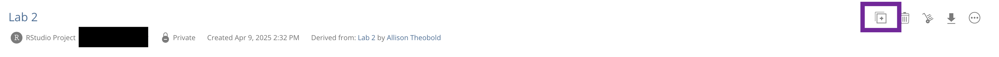
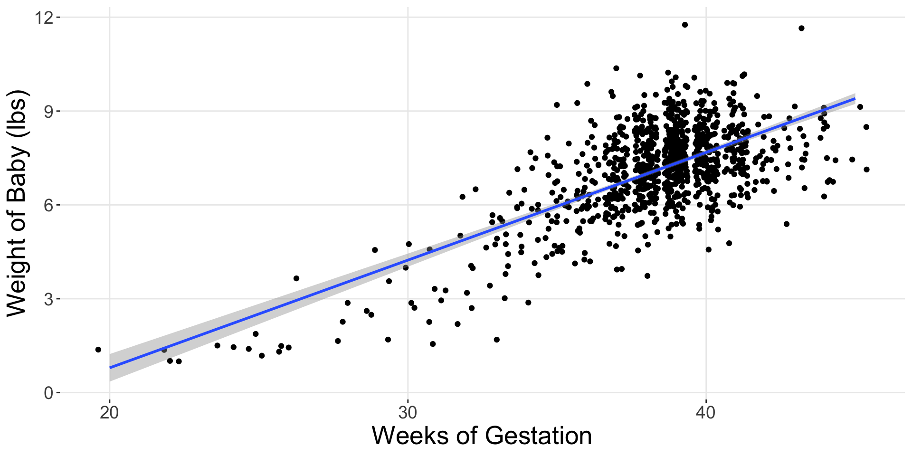
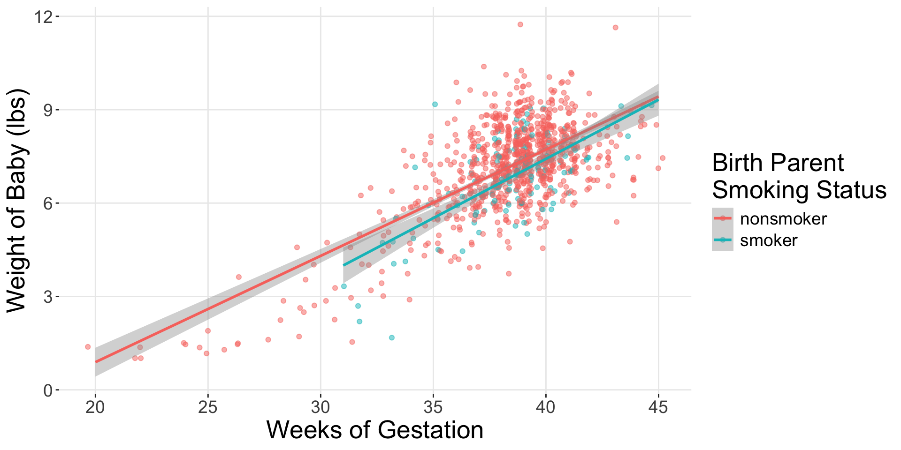

smoke_lm <- lm(weight ~ weeks * habit, data = ncbirths)
get_regression_table(smoke_lm)Introduction to Multiple Linear Regression
Lab 3
A Grading Reminder
“Complete” = Satisfactory
Your group obtained a “Success” on every question
“Incomplete” = Growing
Your group received a “Growing” on at least one question
Common Mistakes
- Categorical variables in R (Q2)
- What data types does R use to store categorical variables? Integers? Characters? Doubles? Factors? Dates?
- The output of
glimpse()can help!
- Comparing distributions between groups (Q9)
- Were trout observed in every channel type in both sections of forest?
- Does every group have a unimodal distribution?
- How different are the centers and spread of the distributions?
- Comparing means to distributions (Q12)
- Are the means you obtained close to the peaks of the distributions?
- Why might that not be the case for some distributions?
Making a Duplicate of Your Group’s Lab 3 Project
- Log in to Posit Cloud
- Open your Weeks 2-3 Group Workspace
- Find Lab 3

- Make a personal copy of your group’s Lab 3

Every member must have their own copy of the lab! No one works in the original document.
Completing Revisions
Lab 3 revisions are due by Wednesday, May 7.
- Read comments on Canvas
- Copy your group’s lab assignment
- Complete your revisions
- Render your revised Lab 3
- Download your revised HTML
- Submit your revisions to the original Lab 3 assignment
Reflections
Revisions are required to be accompanied with reflections on what you learned while completing your revisions. These are expected to be written in your Lab 3 Quarto file (next to the problems you revised).
Midterm Project Week
Plan for Today
Review different types of multiple linear regression models
Complete an activity on sample selection
Start Midterm Project write-up
Plan for Wednesday
No lab – focus on getting all the coding accomplished for the Midterm Project
Draft Due by Sunday
To get everyone feedback on their drafts in a timely manner, the first drafts are due by Sunday.
Deadline Extension
A deadline extension is permitted for the first draft. Deadline extensions are not permitted for the final version (due next week).
Deadlines Throughout the Week
To try and keep everyone on track for getting the Midterm Project draft completed by Sunday, I’ve made some “check point” assignments throughout the week.
- Introduction (due Tuesday)
- Methods & Results (due Thursday)
- Discussion & Conclusion (due Sunday)
Multiple Linear Regression
Before…
Now…

How?
Offsets!
# A tibble: 4 × 3
term estimate std_error
<chr> <dbl> <dbl>
1 intercept -5.94 0.484
2 weeks 0.341 0.013
3 habit: smoker -1.86 1.63
4 weeks:habitsmoker 0.039 0.042Interaction Model
The * means the variables are interacting!
Estimated Regression Equations
# A tibble: 4 × 3
term estimate std_error
<chr> <dbl> <dbl>
1 intercept -5.94 0.484
2 weeks 0.341 0.013
3 habit: smoker -1.86 1.63
4 weeks:habitsmoker 0.039 0.042What is the regression equation for non-smoker mothers?
What is the regression equation for smoker mothers?
Would you say that these two groups have different regression lines?
What would Occam’s razor suggest?
When investigating if a relationship differs…
Always start with the “interaction” / different slopes model.
If the slopes look different, you’re done!
If the slopes look similar, then fit the “additive” (parallel slopes) model.
Different Enough?

What if they’re not very different?

Parallel Slopes
# A tibble: 4 × 3
term estimate std_error
<chr> <dbl> <dbl>
1 intercept 588. 7.61
2 perc_disadvan -2.78 0.106
3 size: medium -11.9 7.54
4 size: large -6.36 6.92 What group is the baseline group?
Group equations – Baseline
# A tibble: 4 × 3
term estimate std_error
<chr> <dbl> <dbl>
1 intercept 588. 7.61
2 perc_disadvan -2.78 0.106
3 size: medium -11.9 7.54
4 size: large -6.36 6.92 \[\widehat{SAT}_{small} = 588 - 2.78 \times \text{percent disadvantaged}\]
Group equations – Offsets
# A tibble: 4 × 3
term estimate std_error
<chr> <dbl> <dbl>
1 intercept 588. 7.61
2 perc_disadvan -2.78 0.106
3 size: medium -11.9 7.54
4 size: large -6.36 6.92 \[\widehat{SAT}_{medium} = (588 - 11.9) - 2.78 \times \text{percent disadvan}\]
\[\widehat{SAT}_{medium} = 576.1 - 2.78 \times \text{percent disadvan}\]
\[\widehat{SAT}_{large} = (588 - 6.36) - 2.78 \times \text{percent disadvan}\]
\[\widehat{SAT}_{large} = 581.64 - 2.78 \times \text{percent disadvan}\]
Sample Selection Activity
Inclusion Criteria
Potential research subjects must meet certain criteria, defined by the researchers, to participate in a study. Inclusion criteria define requirements for inclusion in the study (e.g., a target age range or social group), while exclusion criteria are reasons a subject would be asked not to participate (e.g., certain medical conditions).
For the Dengue Fever paper,
From what population was the sample drawn?
For an observation to be included in the dataset, what inclusion criteria needed to be met?
How were the observations who satisfied the inclusion criteria sampled from the population?
Based on the inclusion criteria and sampling methods, to what population can the findings of the study be generalized?
Find Your Data Group!
Once you have found other students working on the same dataset, complete the sample selection activity.
What are the observations / rows in this dataset?
From what population was the sample drawn?
For an observation to be included in the dataset, what inclusion criteria needed to be met?
How were the observations who satisfied the inclusion criteria sampled from the population?
Based on the inclusion criteria and sampling methods, to what population can the findings of the study be generalized?
Midterm Project Work Time
Steps Before Wednesday
Create a personal copy of the Midterm Project template on Posit Cloud.
Insert the description of your dataset (from the Midterm Proposal) into the “Introduction” section of your project.
Insert the description of the variables (from the Midterm Proposal) into the “Methods” section of your project.
Pose a research question about your selected variables, which can be addressed with multiple linear regression.
Insert the code to create the required two visualizations.
Write a description of what you see in the visualizations.
Make a decision which model you believe is “best.”